COM组件
COM组件概述
COM与组件分开理解，COM是开发软件组件的一种方法，组件实际上是一些小的二进制可执行程序，它们可以给应用程序，操作系统以及其他组件提供服务。
COM最早的设计意图是，跨语言实现程序组件的重用，比如说VC++开发一个控件，在VB中调用，或者在VB中开发一个组件库，给VC++调用。
COM最广泛的应用是ActiveX控件，时至今日，能在很多网站上看到它，比如淘宝安全登录控件，网银控件，甚至大名鼎鼎的Flash Player控件等，整个Visual Basic都基于COM以及ActiveX控件。
从C++到COM
C++客户重用C++对象
C++客户重用C++对象，这个方法很简单就是将C++类的接口文件(.h)和实现文件(.cpp)提供给客户即可。
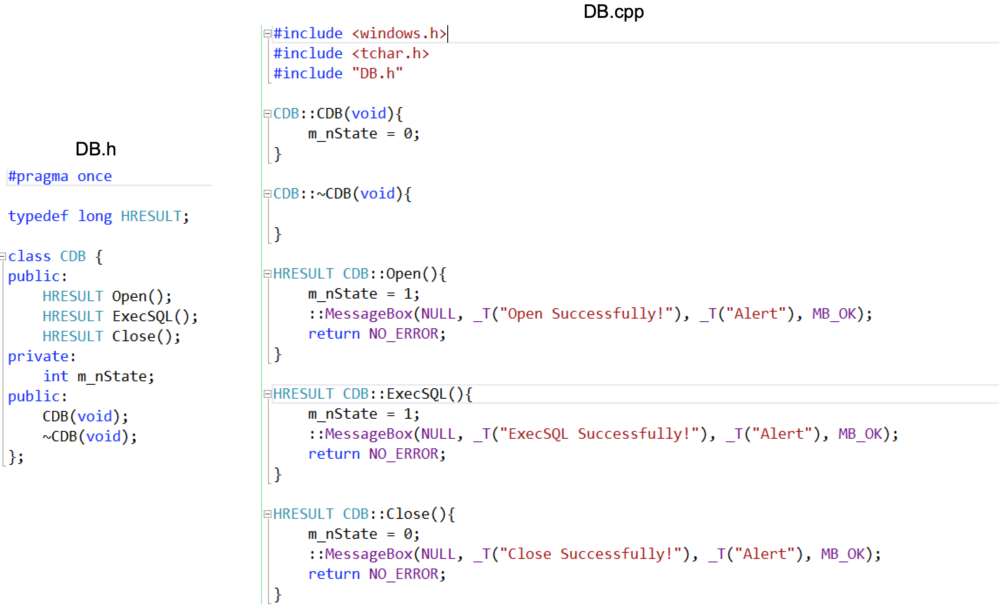
如上所示是一个简单的C++类， 如果客户要使用的话，我们需要将这个文件提供给他：
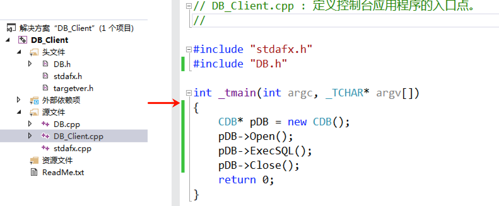
那么这样就会存在一个缺点，就是你的代码都会被客户看见，为了解决这个问题我们可以将C++对象打包到DLL中。
将C++对象打包到DLL中
代码改造
将C++对象打包到DLL中，使用的还是之前的代码，不过我们需要改造一下，如下图所示（创建Win32项目的时候选择DLL项目）：

虽然这样我们就完成了改造，但是为了便于客户侧使用，不让客户去操心内存的管理，我们需要在代码中写好申请、释放，这就需要实现一个类工厂来进行内存的管理。
// 声明类工厂 class CDBSrvFactory {public: HRESULT DEF_DLL_PORT CreateDB(CDB** ppObject); // 申请CDB对象 ULONG DEF_DLL_PORT Release(); // 释放类工厂对象};// 声明返回类工厂对象的引出函数HRESULT DEF_DLL_PORT DllGetClassFactoryObject(CDBSrvFactory** ppObject);代码实现如下：
HRESULT CDBSrvFactory::CreateDB(CDB** ppObject) { *ppObject = new CDB(); return NO_ERROR;}ULONG CDBSrvFactory::Release() { delete this; return 0;}HRESULT DllGetClassFactoryObject(CDBSrvFactory** ppObject) { *ppObject = new CDBSrvFactory(); return NO_ERROR;}完成了这些之后别忘记还有一个CDB对象本身也需要释放，所以需要增加一个方法：
class CDB {public: HRESULT DEF_DLL_PORT Open(); HRESULT DEF_DLL_PORT ExecSQL(); HRESULT DEF_DLL_PORT Close(); HRESULT DEF_DLL_PORT Release();private: int m_nState;public: CDB(void); ~CDB(void);};Release方法实现如下所示：
HRESULT CDB::Release(){ delete this; return NO_ERROR;}最后我们编译一下即可生成：
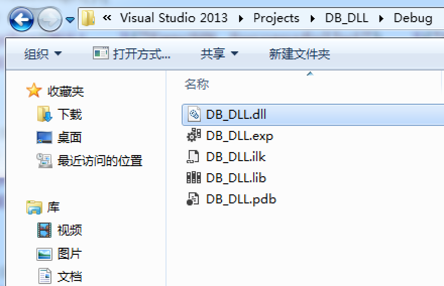
调用文件
在客户侧去使用，需要注意的是你要给到头文件、lib文件和dll文件：
#include "DB.h"
同样这里的缺点就很容易暴露出来了，我们的对象的所有私有成员会被客户看得一清二楚，即便客户不能访问它们，如果改变了数据成员的大小，所有客户程序必须重新编译，同样为了避免这种情况，我们可以使用抽象基类。
C++对象使用抽象基类
利用C++的抽象基类建立一个只包含所有导出成员函数的地址指针表，客户调用函数时只需简单的查找这个表获取函数地址即可调用。
抽象基类很好理解，就是将成员方法变成纯虚函数即可，然后子类继承这个抽象类，如下图所示：

简单改造一番之后将lib、dll文件和抽象基类头文件打包给客户，这样客户就只能看见抽象基类定义的内容，而无法看见子类的私有成员了。

同样这个也有缺点：
客户与所有的组件交互方式不统一（如果组件进行了更新，就需要改代码）；
会重复编写大量客户与组件通信的基础性代码（比如我们写了一个类就写了一个类工厂和DllGetClassFactoryObject函数）。
而解决这一缺陷的手段就是将C++对象改为COM对象。
将C++对象变成COM对象
将C++对象改为COM对象，需要调用COM库创建对象，实现接口的引用计数，类工厂需要使用标准的IClassFactory接口来实现DLL的动态卸载和对象自注册。
需要注意的是在改造过程中所有成员函数都需要添加_stdcall调用约定，因为COM对象在Win32下采用标准调用约定。
注：在这里会引出到很多不了解的概念和意义，不用深究，后续章节会去详细讲解。
修改接口文件
1.将IDB类改为由IUnknown类派生，删除Release成员函数声明（包括CDB类）。
class IDB : public IUnknown {public: virtual HRESULT _stdcall Open() = 0; virtual HRESULT _stdcall ExecSQL() = 0; virtual HRESULT _stdcall Close() = 0;};2.删除类工厂IDBSrvFactory声明，因为我们现在要使用标准类工厂接口IClassFactory。
3.删除DllGetClassFactoryObject函数的声明和定义。
修改对象程序
1.将CDBSrvFactory类由IDBSrvFactory类派生改为由IClassFactory类派生，将CreateDB成员函数改为CreateInstance，同时删除该成员函数的定义，并添加一个成员函数LockServer；为CDB类和CDBSrvFactory类都添加一个引用计数变量m_dwRefCount；为CDB类和CDBSrvFactory类加上QueryInterface、AddRef和Release三个成员函数。
class CDB : public IDB {public: HRESULT _stdcall Open(); HRESULT _stdcall ExecSQL(); HRESULT _stdcall Close(); HRESULT _stdcall QueryInterface(REFIID riid, void** ppObject); ULONG _stdcall AddRef(); ULONG _stdcall Release();private: ULONG m_dwRefCount; int m_nState;public: CDB(void); ~CDB(void);};// 声明类工厂 class CDBSrvFactory : public IClassFactory {public: HRESULT _stdcall CreateInstance(IUnknown *pUnkOuter, REFIID riid, void** ppObject); HRESULT _stdcall LockServer(BOOL fLock); HRESULT _stdcall QueryInterface(REFIID riid, void** ppObject); ULONG _stdcall AddRef(); ULONG _stdcall Release(); CDBSrvFactory(void);private: ULONG m_dwRefCount;};在实现中声明一个外部变量g_dwRefCount：
extern ULONG g_dwRefCount;2.在CDB构造函数中将m_dwRefCount初始化为0，实现CDB类的QueryInterface，AddRef，Release三个成员函数。
CDB::CDB(void){ m_nState = 0; m_dwRefCount = 0;}...HRESULT CDB::QueryInterface(REFIID riid, void** ppObject){ if (riid == IID_IUnknown || riid == IID_IDB) { *ppObject = (IDB*) this; } else { return E_NOINTERFACE; } AddRef(); return NO_ERROR;}ULONG CDB::AddRef(){ g_dwRefCount++; m_dwRefCount++; return m_dwRefCount;}ULONG CDB::Release(){ g_dwRefCount--; m_dwRefCount--; if (m_dwRefCount == 0) { delete this; return 0; } return m_dwRefCount;}需要注意的是在QueryInterface成员函数中有一个IID_IDB变量，这个是我们自定义的内容，其表示当前COM接口的ID，这个需要我们自己去自定义：
// {30DF3432-0266-11cf-BAA6-00AA003E0EED}static const GUID IID_IDB ={ 0x30df3432, 0x266, 0x11cf, { 0xba, 0xa6, 0x0, 0xaa, 0x0, 0x3e, 0xe, 0xed } };需要注意的是，这个变量实际上是一个结构体GUID，注释就是它更加直观的表现形式。
typedef struct _GUID { unsigned long Data1; unsigned short Data2; unsigned short Data3; unsigned char Data4[ 8 ];} GUID;在代码中的IID_IUnknown是COM库的东西，所以我们需要包含一个头文件：
#include <ole2.h>3.定义全局变量g_dwRefCount；在构造函数中将m_dwRefCount初始化为0；实现CDBSrvFactory类的QueryInterface，AddRef，Release三个成员函数；将CDBSrvFactory类的CreateDB成员函数修改为CreateInstance；实现LockServer成员函数；添加DllGetClassObject、DllCanUnloadNow、DllUnregisterServer、DllRegisterServer四个成员函数。
ULONG g_dwRefCount = 0;// {30DF3430-0266-11cf-BAA6-00AA003E0EED}static const GUID CLSID_DBSAMPLE ={ 0x30df3430, 0x266, 0x11cf, { 0xba, 0xa6, 0x0, 0xaa, 0x0, 0x3e, 0xe, 0xed } };HRESULT CDBSrvFactory::CreateInstance(IUnknown *pUnkOuter, REFIID riid, void** ppObject){ if (pUnkOuter != NULL) { return CLASS_E_NOAGGREGATION; } CDB* pDB = new CDB; if (FAILED(pDB->QueryInterface(riid, ppObject))) { delete pDB; *ppObject = NULL; return E_NOINTERFACE; } return NO_ERROR;}HRESULT CDBSrvFactory::LockServer(BOOL fLock){ if (fLock) { g_dwRefCount++; } else { g_dwRefCount--; } return NO_ERROR;}CDBSrvFactory::CDBSrvFactory(){ m_dwRefCount = 0;}HRESULT CDBSrvFactory::QueryInterface(REFIID riid, void** ppObject){ if (riid == IID_IUnknown || riid == IID_IClassFactory) { *ppObject = (IDB*) this; } else { return E_NOINTERFACE; } AddRef(); return NO_ERROR;}ULONG CDBSrvFactory::AddRef(){ g_dwRefCount++; m_dwRefCount++; return m_dwRefCount;}ULONG CDBSrvFactory::Release(){ g_dwRefCount--; m_dwRefCount--; if (m_dwRefCount == 0) { delete this; return 0; } return m_dwRefCount;}STDAPI DllGetClassObject(REFCLSID rclsid, REFIID riid, void** ppObject){ if (rclsid == CLSID_DBSAMPLE) { CDBSrvFactory *pFactory = new CDBSrvFactory; if (FAILED(pFactory->QueryInterface(riid, ppObject))) { delete pFactory; *ppObject = NULL; return E_INVALIDARG; } } else { // here you could check for additional CLSID's you DLL may provide return CLASS_E_CLASSNOTAVAILABLE; } return NO_ERROR;}HRESULT _stdcall DllCanUnloadNow(){ if (g_dwRefCount) { return S_FALSE; } else { return S_OK; }}STDAPI DllRegisterServer(void){ HKEY hKeyCLSID, hKeyInproc32; DWORD dwDisposition; if (RegCreateKeyEx(HKEY_CLASSES_ROOT, _T("CLSID\\{30DF3430-0266-11cf-BAA6-00AA003E0EED}"), NULL, _T(""), REG_OPTION_NON_VOLATILE, KEY_ALL_ACCESS, NULL, &hKeyCLSID, &dwDisposition) != ERROR_SUCCESS) { return E_UNEXPECTED; } if (RegSetValueEx(hKeyCLSID, _T(""), NULL, REG_SZ, (BYTE*)_T("DB Sample Server"), sizeof(_T("DB Sample Server"))) != ERROR_SUCCESS) { RegCloseKey(hKeyCLSID); return E_UNEXPECTED; } if (RegCreateKeyEx(hKeyCLSID, _T("InprocServer32"), NULL, _T(""), REG_OPTION_NON_VOLATILE, KEY_ALL_ACCESS, NULL, &hKeyInproc32, &dwDisposition) != ERROR_SUCCESS) { RegCloseKey(hKeyCLSID); return E_UNEXPECTED; } HMODULE hModule = GetModuleHandle(_T("DB_DLL.DLL")); if (!hModule) { RegCloseKey(hKeyInproc32); RegCloseKey(hKeyCLSID); return E_UNEXPECTED; } TCHAR szName[MAX_PATH + 1]; if (GetModuleFileName(hModule, szName, sizeof(szName)) == 0) { RegCloseKey(hKeyInproc32); RegCloseKey(hKeyCLSID); return E_UNEXPECTED; } if (RegSetValueEx(hKeyInproc32, _T(""), NULL, REG_SZ, (BYTE*)szName, sizeof(TCHAR)*(lstrlen(szName) + 1)) != ERROR_SUCCESS) { RegCloseKey(hKeyInproc32); RegCloseKey(hKeyCLSID); return E_UNEXPECTED; } RegCloseKey(hKeyInproc32); RegCloseKey(hKeyCLSID); return NOERROR;}STDAPI DllUnregisterServer(void){ if (RegDeleteKey(HKEY_CLASSES_ROOT, _T("CLSID\\{30DF3430-0266-11cf-BAA6-00AA003E0EED}\\InprocServer32")) != ERROR_SUCCESS) { return E_UNEXPECTED; } if (RegDeleteKey(HKEY_CLASSES_ROOT, _T("CLSID\\{30DF3430-0266-11cf-BAA6-00AA003E0EED}")) != ERROR_SUCCESS) { return E_UNEXPECTED; } return NOERROR;}如上代码中的{30DF3430-0266-11cf-BAA6-00AA003E0EED}，其实就是COM对象的ID，这些都是要在注册表中去注册的，其也是一段GUID的格式，也就是变量CLSID_DBSAMPLE所表示的内容；在代码中的DB_DLL.DLL，这个为当前COM组件的文件名，自己需要注意修改一下。
DEF导出
我们创建DEF文件将接口导出，以便外部引用：
EXPORTS ;WEP @1 RESIDENTNAME DllGetClassObject DllCanUnloadNow DllRegisterServer DllUnregisterServer客户使用
接下来给只需要将DLL文件、接口头文件、以及对应的COM对象和COM接口的GUID：
// {30DF3430-0266-11cf-BAA6-00AA003E0EED}static const GUID CLSID_DBSAMPLE ={ 0x30df3430, 0x266, 0x11cf, { 0xba, 0xa6, 0x0, 0xaa, 0x0, 0x3e, 0xe, 0xed } };// {30DF3432-0266-11cf-BAA6-00AA003E0EED}static const GUID IID_IDB ={ 0x30df3432, 0x266, 0x11cf, { 0xba, 0xa6, 0x0, 0xaa, 0x0, 0x3e, 0xe, 0xed } };然后让客户通过regsvr32命令注册组件：
regsvr32 DLL文件路径
如果注册失败了，有可能是非管理员权限的原因，可以使用管理员权限打开一个cmd然后运行命令：

接着客户端按如下示例代码进行编写调用即可：
#include "DBInterface.h"#include <iostream>using namespace std;// {30DF3430-0266-11cf-BAA6-00AA003E0EED}static const GUID CLSID_DBSAMPLE ={ 0x30df3430, 0x266, 0x11cf, { 0xba, 0xa6, 0x0, 0xaa, 0x0, 0x3e, 0xe, 0xed } };// {30DF3432-0266-11cf-BAA6-00AA003E0EED}static const GUID IID_IDB ={ 0x30df3432, 0x266, 0x11cf, { 0xba, 0xa6, 0x0, 0xaa, 0x0, 0x3e, 0xe, 0xed } };IDB* g_gDB = NULL;int _tmain(int argc, _TCHAR* argv[]){ IClassFactory *pDBFactory = NULL; HRESULT hRes; // 初始化 hRes = ::CoInitialize(NULL); if (FAILED(hRes)) { cout << "Error " << hRes << " CoInitialize!" << endl; return FALSE; } // 连接COM组件 hRes = CoGetClassObject(CLSID_DBSAMPLE, CLSCTX_SERVER, NULL, IID_IClassFactory, (void**)&pDBFactory); if (FAILED(hRes)) { cout << "Error " << hRes << " obtaining class factory for DB Object!" << endl; return FALSE; } // 得到对象ID对应的接口 hRes = pDBFactory->CreateInstance(NULL, IID_IDB, (void**)&g_gDB); if (FAILED(hRes)) { cout << "Error " << hRes << " creating DB Object!" << endl; return FALSE; } // 释放类工厂 pDBFactory->Release(); // 调用接口方法 g_gDB->Open(); g_gDB->ExecSQL(); g_gDB->Close(); g_gDB->Release(); return 0;}如上代码中，当客户调用CoGetClassObject函数加载COM组件后，就会自动去调用DllGetClassObject函数生成类工厂指针，然后我们通过类工厂指针再调用CreateInstance函数生成类实例，返回接口指针。
COM基础知识
COM对象
COM对象其实就类似于C++中的对象，也就是说某个类的实例，包含了一组数据和操作。
在COM模型中，COM对象的位置对于客户来说是透明的，即客户代码不需要直接初始化一个COM对象，而是COM库通过一个全局标识码GUID去对其进行初始化工作。
GUID是一个128位的标识符，基本保证了COM对象的唯一性，另外COM接口也是用GUID来标识的。
GUID
GUID，又称之为全局唯一标识符，有16个字节，共128位二进制数，可以保证全球范围内不会重复，标识COM对象的GUID称为：CLSID。
COM组件中，GUID的结构定义如下：
typedef struct _GUID { unsigned long Data1; // 随机数 unsigned short Data2; // 和时间有关 unsigned short Data3; // 和时间有关 unsigned char Data4[ 8 ]; // 和网卡MAC有关} GUID;可以看到这个结构还是挺复杂的，如果我们想要手动生成，这将会是一件非常麻烦的事情，不过我们可以通过VS自带的功能去生成：
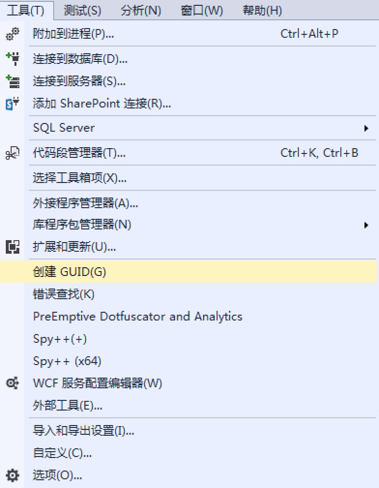
一般来说我们选择第三个即可：
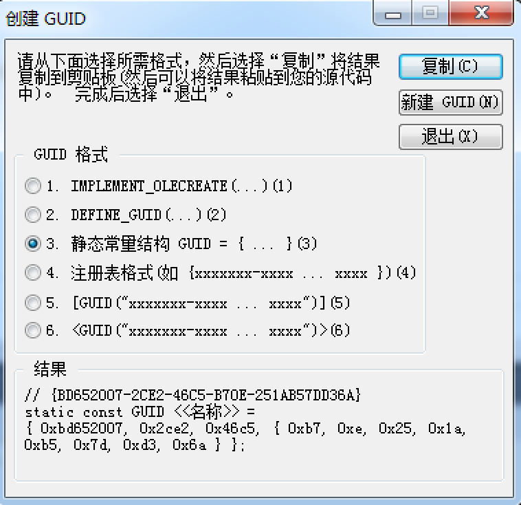
初次之外我们害可以借助CoCreateGuid函数来生成这个GUID：
GUID guid;CoCreateGuid(&guid);从理论上讲，它是不能保证唯一，但重复的可能性非常非常小。有句夸张的说法是：“在每秒钟产生一万亿个GUID的情况下，即使太阳变成白矮星的时候，它仍是唯一的”。
COM接口
COM接口通常是一组函数的逻辑集合，其命名一般以"I"（大写的i）为前缀，并且继承IUnKnown接口；COM对象可以提供多个COM接口，每个接口提供不同的服务，因此COM接口与COM对象一样，都是用GUID来标识的，客户通过GUID来获取接口指针，再通过接口指针获取对应的服务；标识COM接口的GUID称为：IID。
你可以理解为没有去具体声明和实现AddRef、Release、QueryInterface这三个接口函数的类就是我们的COM接口，在如上代码中也就是IDB这个类为COM接口。
IUnknown接口是COM的核心，因为所有其他的COM接口都必须从IUnknown继承；它包含三个接口函数：QueryInterface、AddRef和Release，其中QueryInterface用于接口查询，从COM对象的一个接口获得另一个接口，一个对象可能实现了多个接口，这样就可以通过QueryInterface在对象多个接口之间跳转从而获得多个接口提供的服务；AddRef与Release则用于管理COM对象的生命周期，当COM对象不再使用时需要释放，因此COM使用了引用计数的方法来对对象进行管理，当有一个用户获得接口指针后调用AddRef将引用计数加1，相反，当一个用户用完接口指针后就调用Release来使引用计数减1，这样当引用计数为0时，COM对象就可以从内存中释放；由于IUnknown提供了接口查询与生命周期控制两个功能，因此COM的每个接口都应该继承于它。
如下代码是IUnknown的定义，由此我们可以清楚其本质上就是一个含有纯虚函数的抽象类：
class IUnknown{ public: virtual HRESULT __stdcall QueryInterface(const IID& iid, void** ppv) = 0; virtual ULONG __stdcall AddRef() = 0; virtual ULONG __stdcall Release() = 0; }; COM应用模型
客户/服务模型
如下图就是客户/服务模型：

客户通过COM创建函数获取到COM库，COM库再通过DllGetClassObject获取组件，再通过组件获取类工厂对象接口指针，并用这个指针来调用各个方法。
COM库
初始化函数
1.CoBuildVersion：获取COM库的版本号
2.CoInitialize：初始化COM库
3.CoUnInitialize：终止CO服务
4.CoFreeUnsedLibraries：释放进程中所有不在使用的组件程序
GUID函数
1.IsEquaIGUID：判断两个GUID是否相等
2.IsEquaIIID：判断两个IID是否相等
3.ISEquaICLSID：判断两个CLSID是否相等
4.CLSIDFromProgID：把字符串形式的对像标识转换为CLSID结构形式
5.StringFromCLSID：把CLSID结构形式转化为字符串形式
6.IIDFromString：把字符串形式的接口标识转换为IID结构形式
7.StringFromIID：把IID结构形式转换为字符串形式
8.StringFromGUID2：把GUID结构形式转换为字符串形式
9.ProgIDFromCLSID：从CLSID获取对象标识
对象创建函数
1.CoGetClassObiject：获取对象的类工厂
2.CoCreateInstance：创建COM对象
3.CoCreateInstanceEx：创建COM对象，可指定多个接口或远程对象
4.CoRegisterClassObject：登记一个对象，以便其它应用程序可以连接到该对象
5.CoRevokeClassObject：取消对象的登记操作
6.CoDisconnectObject：断开其他应用程序与对象的连接
内存管理函数
1.CoTaskMemAlloc：内存分配函数
2.CoTaskMemRealloc: 內存重新分配函数
3.CoTaskMemFree：内存释放函数
4.CoGetMallo：获取COM库的内存管理器接口
HRESULT返回值
COM要求所有的方法都会返回一个HRESULT类型的错误号，其就是一个类型定义：
typedef LONG HRESULT;HRESULT类型的返回值反映了函数中的一些情况，其类型定义规范如下：

自定义标记(29位)反映结果是否为自定义标识，1 为是，0 则不是；操作码(16-28位)表示结果操作来源，在Windows平台上，其定义如下：
#define FACILITY_WINDOWS 8#define FACILITY_STORAGE 3#define FACILITY_RPC 1#define FACILITY_SSPI 9#define FACILITY_WIN32 7#define FACILITY_CONTROL 10#define FACILITY_NULL 0#define FACILITY_INTERNET 12#define FACILITY_ITF 4#define FACILITY_DISPATCH 2#define FACILITY_CERT 11操作结果码(0-15位)反映操作的状态，WinError.h定义了Win32函数所有可能返回结果。
以下是一些经常用到的返回值和宏定义：
|
返回值 |
含义 |
|
S_OK |
函数执行成功，其值为0(注意，其值与TRUE相反) |
|
S_FALSE |
函数执行成功，其值为1 |
|
S_FAIL |
函数执行失败，失败原因不确定 |
|
E_OUTOFMEMORY |
函数执行失败，失败原因为内存分配不成功 |
|
E_NOTIMPL |
函数执行失败，成员函数没有被实现 |
|
E_NOTINTERFACE |
函数执行失败，组件没有实现指定的接口 |
需要注意，我们不能简单地把返回值与S_OK和S_FALSE比较，而要用SECCEEDED和FAILED宏进行判断。
#define SUCCEEDED(hr) (((HRESULT)(hr)) >= 0)#define FAILED(hr) (((HRESULT)(hr)) < 0)COM与注册表
COM客户和COM组件是相互独立的，COM组件的重要性质之一是位置透明性；当客户程序调用COM对象时不需要考虑COM组件所处的位置，这就是位置无关性；COM位置无关性的实现机制并不深奥，它主要依赖于注册表，这也就是为什么一定要在使用之前对COM组件进行注册的原因；COM库在接到客户程序的请求后，会根据给定的GUID到注册表中检索COM对象的注册条目，并以此来定位COM对象。
COM组件对应二进制文件的存放路径：
HKEY_CLASSES_ROOT\CLSID\COM组件的CLSID\InprocServer32HKEY_LOCAL_MACHINE\SOFTWARE\Classes\CLSID\COM组件的CLSID\InprocServer32HKEY_CLASSES_ROOT\Wow6432Node\CLSID\COM组件的CLSID\InprocServer32HKEY_LOCAL_MACHINE\SOFTWARE\Classes\Wow6432Node\CLSID\COM组件的CLSID\InprocServer32
COM组件
实现类工厂对象
COM对象的创建是通过类工厂来完成的，类工厂是COM对象的生产基地，对应每一个COM类，都有一个类工厂专门用于该COM类的对象创建操作。

类厂本身也是一个COM对象，它支持一个特殊的接口IClassFactory，这个接口的定义如下：
IClassFactory : public IUnknown{public: virtual /* [local] */ HRESULT STDMETHODCALLTYPE CreateInstance( /* [unique][in] */ IUnknown *pUnkOuter, /* [in] */ REFIID riid, /* [iid_is][out] */ void **ppvObject) = 0; virtual /* [local] */ HRESULT STDMETHODCALLTYPE LockServer( /* [in] */ BOOL fLock) = 0;};我们可以看见它继承了IUnknown接口，并且多了两个成员函数：CreateInstance、LockServer。
CreateInstance函数是IClassFactory接口中最重要的函数，它用于创建相应的COM对象，因为每个类厂只针对特定的COM对象，所以CreateInstance成员函数知道该创建什么样的COM对象。
LockServer用于控制组件的生存周期，用于在多客户调用COM时，锁定COM，以免一个客户退出时销毁了COM，那么其他客户的调用将发生错误。
实现自动注册
组件程序创建完成之后，必须要通过某种途径把它的信息注册到注册表中，然后客户程序才能根据注册表中的信息对组件程序进行操作。
实现自注册组件必须提供两个导出函数：
STDAPI DllRegisterServer(void) STDAPI DllUnregisterServer(void) regsvr32 com组件路径命令实际是regsvr32.exe调用组件的DllRegisterServer函数，实际注册的操作是在组件的DllRegisterServer函数里完成的，同样执行regsvr32 /u com组件路径命令可以进行反注册，实际进行反注册的操作是在组件的DllUnregisterServer函数里完成的。
实现自动卸载
只有当组件满足以下两个条件才能被卸载：
组件中对象数为0；
类厂的锁计数为0。
COM中的CoFreeAllLibraries函数可以检测当前进程中的所有组件程序，当发现某个组件满足上面两个条件时，就调用FreeLibrary函数把该组件从内存中释放，有两个问题：
谁来调用CoFreeAllLibraries函数？是由客户来调用，一般在程序空闲的时候调用。
CoFreeAllLibraries函数怎么知道满足了上面说的可以卸载的条件？需要组件导出一个DllCanUnloadNow函数，如果DllCanUnloadNow函数返回S_OK表示对象可以被卸载。
COM客户
COM客户从只知道CLSID到获取到接口指针必须经过两步：
得到该CLSID的类厂对象；
由类厂对象创建COM对象，返回接口指针给客户。
客户得到对象接口指针后，可以用指针调用接口的成员函数，还可以获得其他接口的指针，从而得到COM对象的所有服务。
COM数据类型
COM常见数据类型
COM常见的数据类型如下所示，其中字体加粗部分是我们暂时不了解的：
CHAR, CHAR*, BYTE, BYTE*, SHORT, SHORT*, USHORT, USHORT*, INT, INT*, UINT, UINT*, LONG, LONG*, ULONG, ULONG*, FLOAT, FLOAT*, DOUBLE, DOUBLE*, VARIANT_BOOL, VARIANT_BOOL*, BSTR, BSTR*, IUnknown*, IUnknown**, VARIANT, VARIANT*
VARIANT_BOOL
数据类型VARIANT_BOOL的定义如下，其本质就是一个short类型：
typedef short VARIANT_BOOL;我们想要使用这个类型的话需要包含一个头文件：
#include <oaidl.h>BSTR
数据类型BSTR是COM中的字符串类型，BSTR*也就是其的指针；BSTR是指向的是宽字符串的指针，是一个带有字符计数值的字符串，且这个计数值是保存在字符数组的开头的4字节中。

在使用之前需要包含头文件（定义的文件），如果你包含了windows.h或者atlbase.h文件也可以：
#include <atlconv.h>使用BSTR不能直接赋值，需要借助函数：
BSTR bstrA = SysAllocString(L"Hello BSTR"); // 赋值BSTR bstrB = SysAllocStringLen(bstrA, SysStringLen(bstrA)); // 指定长度赋值SysFreeString(bstrA); // 释放SysFreeString(bstrB); // 释放我们可以在VS中调试一下观察内存，可以很清楚的看见在Hello前面记录了字符串的长度0x14，也就是20：
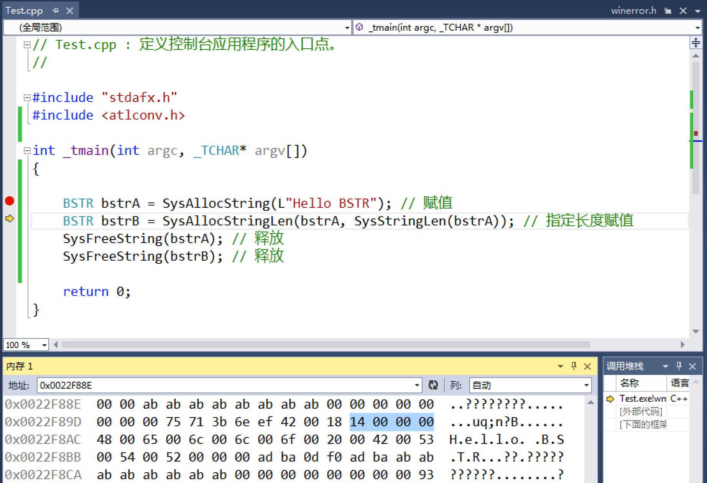
如上示例中也直接将BSTR有关的函数给列出来了：
BSTR SysAllocString(const OLECHAR *); // 是COM中申请BSTR字符串的方法。BSTR SysAllocStringLen(const OLECHAR *, UINT); // 根据字符串指针与字符个数构造BSTR字符串。UINT SysStringLen(BSTR); // 获取字符串前面的计数值。void SysFreeString(BSTR); // 释放字符串，当COM中的字符串（BSTR）不再使用时，调用该函数。VARIANT
计算机语言多种多样，COM产生的目的之一就是要跨语言，而VARIANT数据类型就具有了跨语言的特性，同时它可能存储任何的数据类型，说夸张一点，它是万能数据类型。
为实现万能类型的功能，在C++中，VARIANT是一个结构体，该结构体内部又有联合体（联合了多种基本的数据类型），又有变量类型标志VARTYPE vt，可见VARIANT被设置得多么巧妙、合理。
typedef /* [wire_marshal] */ struct tagVARIANT VARIANT;struct tagVARIANT { union { struct __tagVARIANT { VARTYPE vt; WORD wReserved1; WORD wReserved2; WORD wReserved3; union { LONGLONG llVal; LONG lVal; BYTE bVal; SHORT iVal; FLOAT fltVal; DOUBLE dblVal; VARIANT_BOOL boolVal; _VARIANT_BOOL bool; SCODE scode; CY cyVal; DATE date; BSTR bstrVal; IUnknown *punkVal; IDispatch *pdispVal; SAFEARRAY *parray; BYTE *pbVal; SHORT *piVal; LONG *plVal; LONGLONG *pllVal; FLOAT *pfltVal; DOUBLE *pdblVal; VARIANT_BOOL *pboolVal; _VARIANT_BOOL *pbool; SCODE *pscode; CY *pcyVal; DATE *pdate; BSTR *pbstrVal; IUnknown **ppunkVal; IDispatch **ppdispVal; SAFEARRAY **pparray; VARIANT *pvarVal; PVOID byref; CHAR cVal; USHORT uiVal; ULONG ulVal; ULONGLONG ullVal; INT intVal; UINT uintVal; DECIMAL *pdecVal; CHAR *pcVal; USHORT *puiVal; ULONG *pulVal; ULONGLONG *pullVal; INT *pintVal; UINT *puintVal; struct __tagBRECORD { PVOID pvRecord; IRecordInfo *pRecInfo; } __VARIANT_NAME_4; } __VARIANT_NAME_3; } __VARIANT_NAME_2; DECIMAL decVal; } __VARIANT_NAME_1; } ;变量类型标志VARTYPE vt，其有对应的值：
/* VARIANT STRUCTURE * * VARTYPE vt; * WORD wReserved1; * WORD wReserved2; * WORD wReserved3; * union { * LONGLONG VT_I8 * LONG VT_I4 * BYTE VT_UI1 * SHORT VT_I2 * FLOAT VT_R4 * DOUBLE VT_R8 * VARIANT_BOOL VT_BOOL * SCODE VT_ERROR * CY VT_CY * DATE VT_DATE * BSTR VT_BSTR * IUnknown * VT_UNKNOWN * IDispatch * VT_DISPATCH * SAFEARRAY * VT_ARRAY * BYTE * VT_BYREF|VT_UI1 * SHORT * VT_BYREF|VT_I2 * LONG * VT_BYREF|VT_I4 * LONGLONG * VT_BYREF|VT_I8 * FLOAT * VT_BYREF|VT_R4 * DOUBLE * VT_BYREF|VT_R8 * VARIANT_BOOL * VT_BYREF|VT_BOOL * SCODE * VT_BYREF|VT_ERROR * CY * VT_BYREF|VT_CY * DATE * VT_BYREF|VT_DATE * BSTR * VT_BYREF|VT_BSTR * IUnknown ** VT_BYREF|VT_UNKNOWN * IDispatch ** VT_BYREF|VT_DISPATCH * SAFEARRAY ** VT_BYREF|VT_ARRAY * VARIANT * VT_BYREF|VT_VARIANT * PVOID VT_BYREF (Generic ByRef) * CHAR VT_I1 * USHORT VT_UI2 * ULONG VT_UI4 * ULONGLONG VT_UI8 * INT VT_INT * UINT VT_UINT * DECIMAL * VT_BYREF|VT_DECIMAL * CHAR * VT_BYREF|VT_I1 * USHORT * VT_BYREF|VT_UI2 * ULONG * VT_BYREF|VT_UI4 * ULONGLONG * VT_BYREF|VT_UI8 * INT * VT_BYREF|VT_INT * UINT * VT_BYREF|VT_UINT * } */当我们想用VARIANT来保存LONG类型的时候可以这样写：
VARIANT var;VariantInit(&var); // 初始化var.vt = VT_I4; // 变量类型标志，如上所示VT_I4对应LONG类型var.lVal = 100; // 这里的成员lVal就表示着LONG，这个可以在VARIANT结构体的定义中找到VariantClear(&var); // 清空存储学会了，接下来就要从VARIANT中读取存储的值了：
VARIANT var;VariantInit(&var); // 初始化var.vt = VT_I4; // 变量类型标志，如上所示VT_I4对应LONG类型var.lVal = 100; // 这里的成员lVal就表示着LONG，这个可以在VARIANT结构体的定义中找到if (var.vt == VT_I4) // 判断{ LONG lVar = var.lVal; // 获取}VariantClear(&var); // 清空如果你想要将VARIANT进行数据类型的转换可以使用函数VariantChangeType：
WINOLEAUTAPI VariantChangeType( _Inout_ VARIANTARG * pvargDest, // 目标VARIANT的指针 _In_ const VARIANTARG * pvarSrc, // 源VARIANT的指针 _In_ USHORT wFlags, // 强制转化的控制符 _In_ VARTYPE vt // 需要强制转化的类型);例如我现在想将LONG类型转为FLOAT类型：
VARIANT var;VariantInit(&var); // 初始化var.vt = VT_I4; // 变量类型标志，如上所示VT_I4对应LONG类型var.lVal = 100; // 这里的成员lVal就表示着LONG，这个可以在VARIANT结构体的定义中找到VariantChangeType(&var, &var, 0, VT_R4);VariantClear(&var); // 清空
ATL
简介
ATL是活动(动态)模板库(ActiveX Template Library)的缩写，它是一套C++模版；ATL的基本目标：使COM开发尽可能自动化，这个基本目标决定了ATL只面向COM开发提供支持。
用ATL制作简单对象
创建ATL工程：直接使用VS创建默认的即可。
添加简单对象：通过可视化操作直接去创建，相当于给你创建了头文件（h）和实现文件（cpp），以及在idl文件中添加了内容。
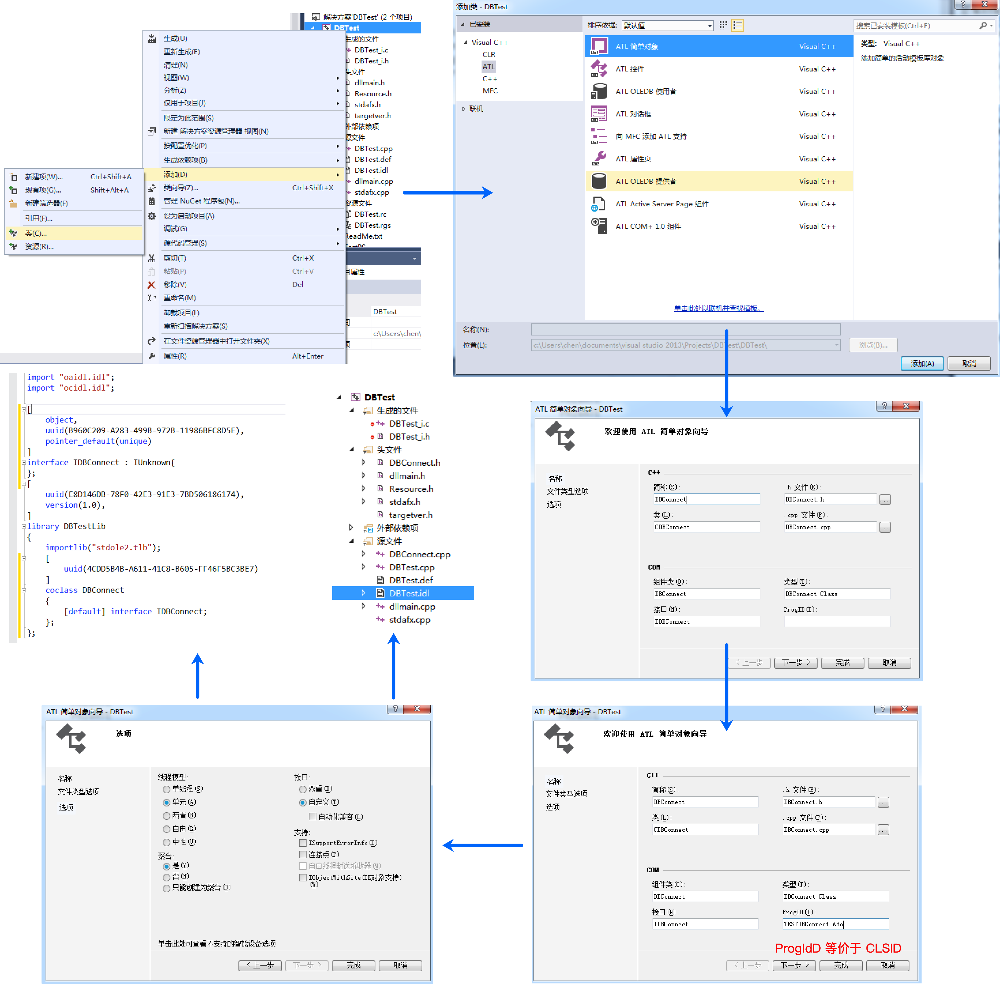
添加接口：在这里创建完成之后在头文件中加入了接口的声明，在定义文件中添加了接口的定义，并且在idl文件中也添加了对应的接口信息。

在添加接口的时候可以选择接口的参数类型，根据这个接口的作用去选择。
至此整个步骤了解之后就会产生的一些疑问：
ProgID是什么：ProgID等价于CLSID
找不到COM类的AddRef、Release、QueryInterface函数的实现
找不到类厂的定义和实现
问题2、3在ATL中实际上是换了一个形式出现了，可以在头文件中找到，见如下图注释：

注册表脚本文件有什么作用：注册表脚本文件就是资源文件中的rgs后缀名文件，这里其实是要写入注册表里的信息，当调用注册函数的时候就会使用这里的信息写入到注册表中
后缀为idl的文件是什么文件：IDL全称Interface Description Language，中文为接口描述语言；IDL的主要作用是用来以一种与语言无关的方法来定义一个组件的接口（它的方法和参数），使组件的接口描述在任何语言环境中都认识；IDL是一个文本文件，它的语言语法比较简单，很像C语言；在ATL中IDL文件由MIDL编译，编译后生成TLB文件，类型库以TLB文件形式单独存在，同时也保存在目标文件的资源中，因此我们在引入类型库的时候，即可以指定TLB文件，也可以指定目标文件。
我们可以看一下这个idl文件，其具体含义可以见如下图注释：

组件的CLSID在哪里：如上图注释所示。

最后你只需要编译一下，在项目Debug目录可以找到TLB文件：

MFC调用COM组件
首先你需要创建一个MFC项目，选择基于对话框Dialog创建即可，而后将其他的控件删除留一个按钮便于后续调用，接着你需要引入类型库：
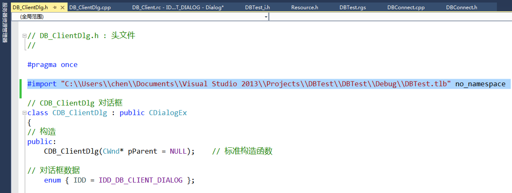
#import "C:\\Users\\chen\\Documents\\Visual Studio 2013\\Projects\\DBTest\\DBTest\\Debug\\DBTest.tlb" no_namespace然后，你需要在头文件中定义好这个接口指针：

接着在OnInitDialog初始化的时候去初始化COM，根据ProgId创建COM对象：
HRESULT hRes;CoInitialize(NULL);hRes = m_pDB.CreateInstance(L"TESTDBConnect.Ado.1");if (FAILED(hRes)){ ::MessageBox(NULL, _T("Error"), _T("Title"), MB_OK);}最后，我们在按钮左键单击事件中去调用接口函数即可：
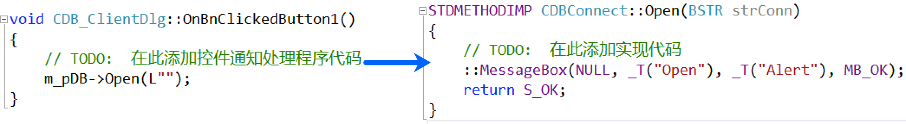
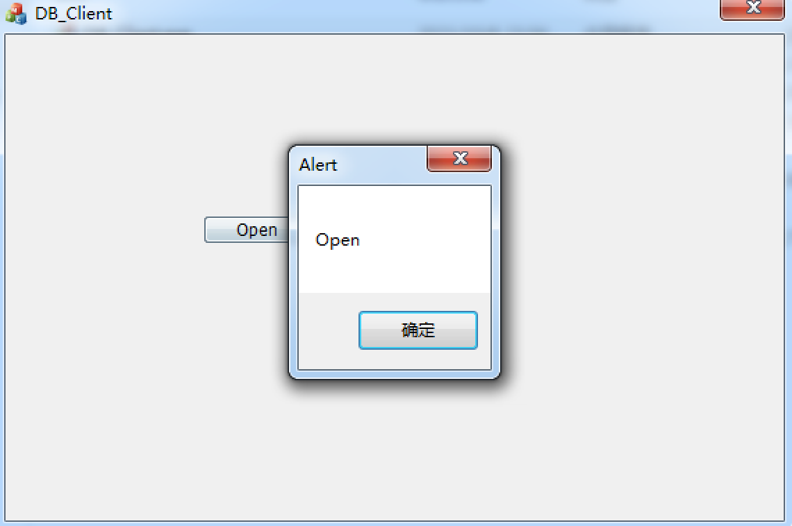
在这里之所以能成功，是因为我们在编译ATL项目的时候就自动注册了这个COM组件（如果你编译项目失败，可以尝试使用管理员权限打开VS）。
拓展操作
加属性
添加组件属性
我们现在所模拟的是一个DB的COM组件，而现在我们要添加一个DB连接的状态，这时候就需要通过ATL来添加属性了，如下图所示操作，当你添加一个属性之后在头文件中就会多出两个成员函数的声明以及在实现文件中多出对应的代码实现，最后在idl文件中也可以看见接口函数列表也多出了这些内容。

通过多出的代码我们可以知道，原来这里通过ATL添加的State属性需要使用get_State来获取值，以及通过put_State来修改值，但是这里的最关键的值我们却没有看见，所以我们可以选择在类中去声明一个成员变量：

接着我们去实现这两个方法即可：
STDMETHODIMP CDBConnect::get_State(LONG* pVal){ // TODO: 在此添加实现代码 *pVal = m_iState; return S_OK;}STDMETHODIMP CDBConnect::put_State(LONG newVal){ // TODO: 在此添加实现代码 m_iState = newVal; return S_OK;}接着要在对象创建的时候去初始化这个值，在ATL中初始化的话，你可以在头文件中找到FinalConstruct方法，并在该方法体中去初始化：

客户使用属性
在客户侧去使用这些属性十分简单，直接访问其对应的函数，或直接访问这个属性即可。
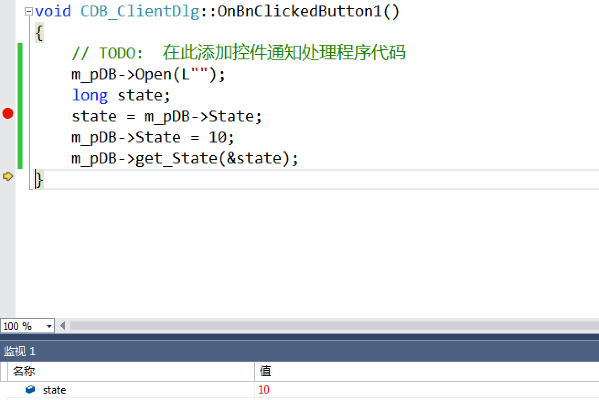
多接口
实现多接口
我们之前写的COM组件，只有一个类并且只有一个接口，但是我们完全可以让一个COM类提供多个接口。
实现多接口需要手动去做一些改造，首先我们需要在idl文件中加入接口相关的信息，例如这里我加入一个检测的接口，并且接口函数只有一个检测功能：

不要忘记在接口列表中也将接口添加上去：

接着我们需要在DBConnect头文件中声明接口和接口函数：
class ATL_NO_VTABLE CDBConnect : public CComObjectRootEx<CComSingleThreadModel>, // 这里实现了IUnknow的三个函数 public CComCoClass<CDBConnect, &CLSID_DBConnect>, // 这里生成了类工厂 public IDBConnect, public IDBConnectChk{public:...BEGIN_COM_MAP(CDBConnect) COM_INTERFACE_ENTRY(IDBConnect) COM_INTERFACE_ENTRY(IDBConnectChk)END_COM_MAP()...public:... STDMETHOD(CheckSQL)(BSTR sql);};然后还要去实现这个接口函数：
STDMETHODIMP CDBConnect::CheckSQL(BSTR sql){ // TODO: 在此添加实现代码 ::MessageBox(NULL, _T("CheckSQL"), _T("Alert"), MB_OK); return S_OK;}如果你想让自己的工程看起来规范化，可以替换一下ProgID、Version，当前是1.0版本，可以变成2.0版本，ProgID的最后那个“.1”就表示版本号也可以替换一下。
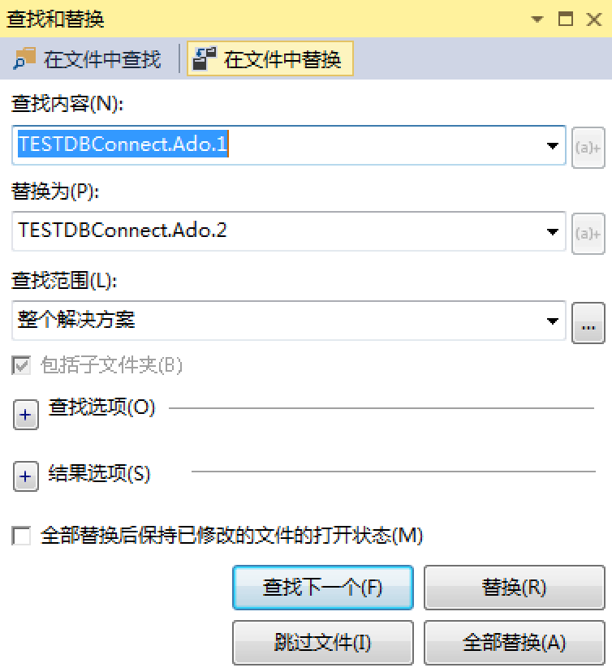
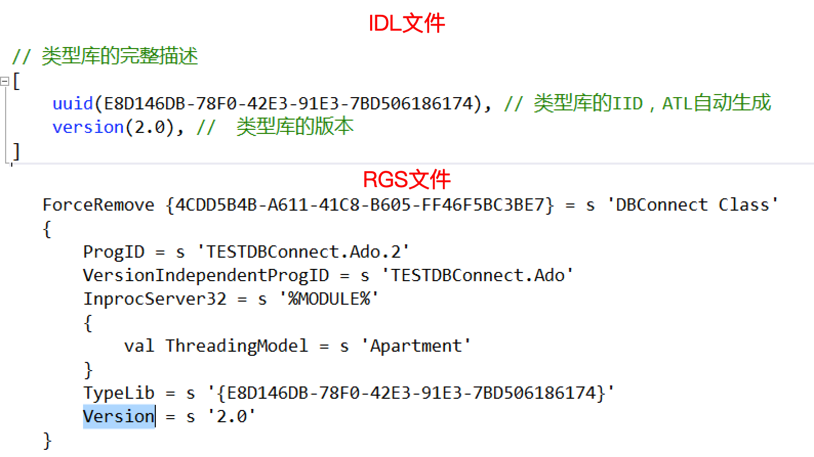
客户使用多接口
在客户侧去使用多接口也很简单，首先引入类型文件，其次定义接口指针：

接着你需要在OnInitDialog函数内去切换接口，这需要使用到QueryInterface方法，你需要传递两个参数，一个是接口的IID，一个是接口指针的地址；接口的IID可以通过COM组件项目的“xxx_i.c”文件找到，这是idl生成的，所以需要你编译之后才有内容，接着将MIDL_DEFINE_GUID的宏定义以及对应接口的宏调用复制过来，IID_IDBConnectChk就是最终的接口对应的IID：

再接着我们对应填充参数即可：
hRes = m_pDB.QueryInterface(IID_IDBConnectChk, &m_pDBChk);
最后我们只需要调用接口函数即可：
void CDB_ClientDlg::OnBnClickedButton1(){ // TODO: 在此添加控件通知处理程序代码 m_pDBChk->CheckSQL(L"");}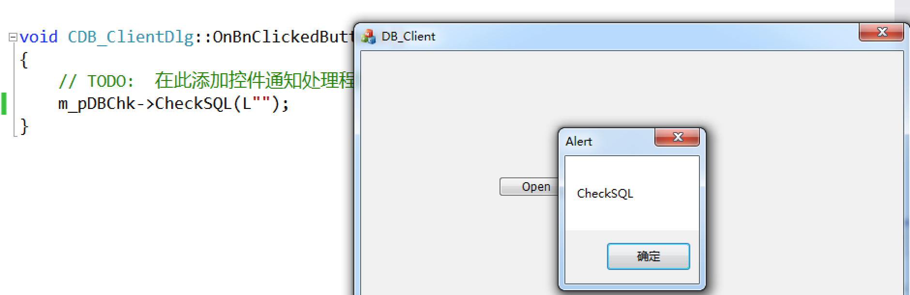
最后需要注意的是idl生成的两个文件可以直接被引用，这样你就可以不用去引入类型库文件（tlb文件）了：
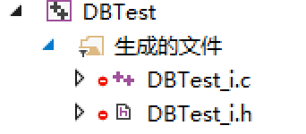
多COM类
既然COM可以多接口，那也同样可以多个COM类，这个的操作步骤在ATL中都已经了解过了，不过多赘述。
自动化
简介
编译型语言在编译之前引入类型库(tlb文件)，编译器编译的时候就知道如何编译接口函数的调用了，这种方式我们称为前绑定；而脚本语言是解释执行的，它执行的时候不会知道具体的函数地址，自动化为此诞生了后绑定；自动化组件其实就是实现了IDispatch（自动化）接口的组件；解释性语言跟宏语言，要调用COM组件的自定义接口时，都是通过自动化控制程序把自定义接口中的函数名称的字符串跟函数参数传递给IDispatch，让IDispatch间接地去执行自定义接口中的函数；所以本节课所需要学习的就是IDispatch（自动化）接口。
IDispatch（自动化）接口
IDispatch接口要实现四个函数：
|
函数名 |
作用 |
|
HRESULT GetTypeInfoCount() |
获取组件中提供几个类型库 |
|
HRESULT GetTypeInfo() |
调用者通过该函数取得他想要的类型库 |
|
HRESULT GetIDsOfNames() |
根据函数名称取得函数序号，为调用 Invoke() 做准备 |
|
HRESULT Invoke() |
根据序号，执行函数 |
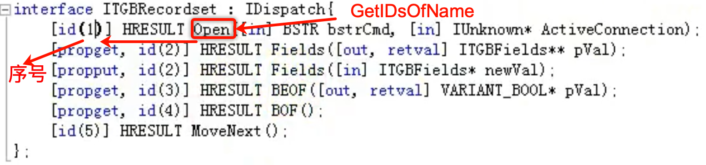
如上图所示受限我们需要使用IDispatch接口的GetIDsOfNames函数去获取函数序号，接着再使用Invoke函数根据序号获取函数的地址然后执行，这样下来执行效率是比较低的，所以ATL从效率出发，实现了一种叫双接口(dual)的接口模式，我们来了解一下。
双接口
示意图
如下是双接口示意图，我们可以看见他有三个部分，分别是IUnknow、IDispatch、自定义接口，所谓双接口，其实是在一个VTAB的虚函数表中容纳了三个接口，因为任何接口都是从IUnknown派生的，所以就不强调IUnknown了，就称之为双接口。
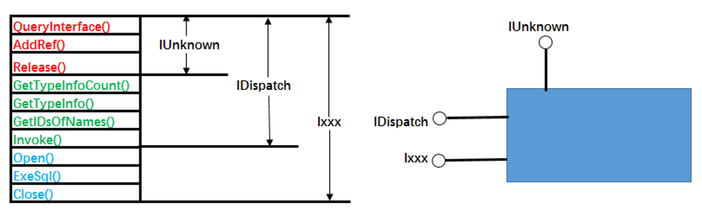
场景与优点
如下表所示是在不同场景下使用双接口、原因与使用结果：
|
使用方式 |
原因 |
结果 |
|
脚本语言使用组件 |
解释器只认识IDispatch接口 |
可以调用，但执行效率最低 |
|
编译型语言使用组件 |
它认识IDispatch接口 |
可以调用，执行效率比较低 |
|
编译型语言使用组件 |
它装载类型库就认识了Ixxx接口 |
可以直接调用Ixxx函数，效率最高 |
最终我们得到一个结论，那就是双接口即满足脚本语言的使用方便，又满足编译语言的使用高效性，这就是它的优点。
注：如果不需要支持脚本语言最好不要用双接口，因为双接口、IDispatch接口只支持自动化的参数类型，使用受到限制，某些情况下很不方便。
使用自动化组件
使用自动化组件并不难，跟之前一样创建ATL项目以及简单对象，只不过在创建对象的时候需要选择接口类型为双重：

接着添加方法即可：

当你添加的时候你就会发发型，这个方法名会自动赋予ID，这个你可以自定义，也可以不用管它。
实现好接口函数之后你只需要编译即可：
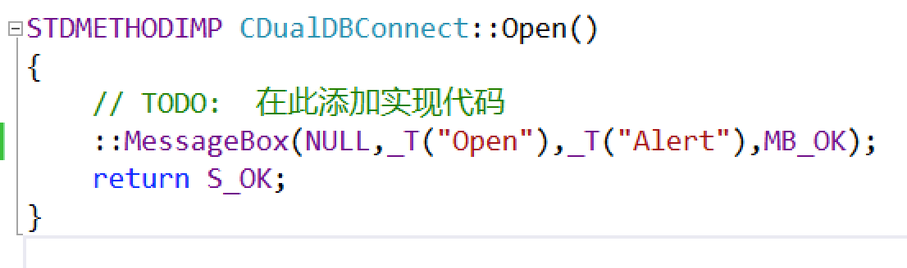
JavaScript调用
接着我们想要在JavaScript中去调用这个COM组件，编写代码：
<script type="text/javascript"> var myCom = new ActiveXObject("DualDBConnect.Ado.1"); // ProgID function OpenTest() { myCom.Open(); }</script><input type="button" value="Open" onclick="OpenTest()" />接着在IE浏览器中打开这个HTML页面，并允许阻止的内容，单击即可调用接口函数：

智能类型
之前我们所了解过VARIANT类型，该类型的优点我们都知道是其可以兼容所有的数据类型，但同时，我们了解VARIANT类型初始化赋值十分繁琐。
为了使用VARIANT类型更加方便，ATL对VARIANT数据类型做了封装，封装了一个CComVariant类型，它内部维护了一个VARIANT的数据结构，所以我们可以很方便的在大多少情况下用CComVariant来替代VARIANT。
CComVariant
CComVariant的数据结构定义可以自行去查看，由于代码过长这里不过多展示，从定义中我们可以看出，其提供了几乎所有数据类型的构造，这就意味着我们初始化CComVaiant对象时可以简单的采用：
CComVaiant comVar("ABC");并其提供了所有类型赋值运算符的重载，可以采用下面方式直接赋值：
comVar = "XYZ";由于它内部维护了一个VARIANT的数据结构，我们也可以使用VARIANT类型的方式：
CComVaiant comVar(123, VT_I4);其他的使用方法都如出一辙，同样，也不过多赘述了。
CComPtr、CComQIPtr
简介
C++在调用COM接口指针时是很危险的，因为使用过程需要每一个使用都严格并且正确地调用AddRef与Release方法。一旦出现问题，就会造成对象不能被正常释放或者对象被重复删除。
CComPtr、CComQIPtr是ATL为了解决COM引用计数问题提供的一个类模版，因为它的使用和行为上类似与一个接口指针，所以有一个通俗易懂的名字：智能指针。
这两个模版类都继承自CComPtrBase，不同之处在于CComQIPtr能在必要的时候自动的对所需接口进行查询（如：对与此智能指针参数化类型不同的指针赋值时，会自动查询是否有所需的接口）。
CComPtrBase类封装了CComPtr和CComQIPtr中公共的大多数函数，从而实现代码的复用。
比较
智能指针与接口指针的比较如下：
CComPtr<IDBConnect> spDBConn;创建了一个智能指针，其实它是一个类对象，对象内部有一个IDBConnect*的指针变量，而IDBConnect* pDBConn就是一个指针；
二者操作的用法和意义一样；
智能指针不能执行AddRef与Release操作，因为智能指针封装了COM接口指针的AddRef与Release操作，会智能判断何时内部调用COM接口的AddRef，何时调用COM接口的Release。
注意
智能指针使用的注意点：
智能指针已经保证了AddRef和Release的正确调用，所以不需要，也不能够再调用AddRef和Release；
如果要释放一个智能指针，直接给它赋NULL,这样内部才COM接口指针会自动执行Release操作，来减少应用计数；
当对智能指针取地址时(&运算符操作)，要确保智能指针为NULL，因为&是要返回内部的COM接口指针的，如果不为NULL，则旧的COM接口指针将没有执行Release而直接赋值了一个旧的COM接口指针。
使用
在使用只能智能指针需要包含一个头文件：
#include <atlbase.h>
接着调用即可：
HRESULT hRes;CComPtr<IUnknown> spUnk;CComPtr<IDualDBConnect> spDBConn;hRes = spUnk.CoCreateInstance(L"DualDBConnect.Ado.1"); // 创建IUnknownif (FAILED(hRes)){ ::MessageBox(NULL, _T("Error"), _T("Title"), MB_OK);}hRes = spUnk->QueryInterface(&spDBConn); // 寻找IDualDBConnectif (FAILED(hRes)){ ::MessageBox(NULL, _T("Error"), _T("Title"), MB_OK);}spDBConn->Open(); // 调用
我们也可以使用CComQIPtr，这个智能指针可以直接赋值而不需要使用QueryInterface方法：
HRESULT hRes;CComPtr<IUnknown> spUnk;CComQIPtr<IDualDBConnect> spDBConn;hRes = spUnk.CoCreateInstance(L"DualDBConnect.Ado.1");if (FAILED(hRes)){ ::MessageBox(NULL, _T("Error"), _T("Title"), MB_OK);}spDBConn = spUnk;if (!spDBConn){ ::MessageBox(NULL, _T("Error"), _T("Title"), MB_OK);}spDBConn->Open();需要注意CComQIPtr不能定义IUnknown指针，所以只需要修改spDBConn为CComQIPtr即可。
同样你可以简化这种写法，直接使用接口的IID即可：
// MIDL_DEFINE_GUID(IID, IID_IDualDBConnect,0x8D7C23E2,0xEDE3,0x4E10,0x96,0x6F,0x2D,0x56,0x2C,0x93,0xD1,0xFA);// 将这个转为IID格式即可IID IID_IDualDBConnect = { 0x8D7C23E2, 0xEDE3, 0x4E10, { 0x96, 0x6F, 0x2D, 0x56, 0x2C, 0x93, 0xD1, 0xFA } };HRESULT hRes;CComQIPtr<IDualDBConnect, &IID_IDualDBConnect> spDBConn;hRes = spDBConn.CoCreateInstance(L"DualDBConnect.Ado.1");if (FAILED(hRes)){ ::MessageBox(NULL, _T("Error"), _T("Title"), MB_OK);}spDBConn->Open();